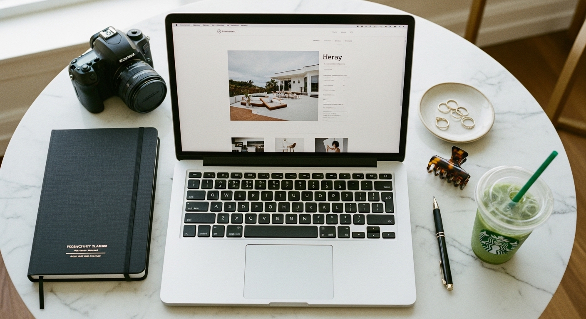

website template for photographers

HOW TO CHOOSE A WEBSITE TEMPLATE FOR PHOTOGRAPHERS THAT ACTUALLY BOOKS CLIENTS
You have stunning images. Hours of editing. A portfolio that proves you know what you're doing behind the camera. But your website? It looks like everyone else's. Or worse - it looks like you threw it together between shoots and never came back to finish it.
A website template for photographers should do one job: make potential clients trust you enough to reach out. Not just display your work. Not just exist online. Actually convert visitors into inquiries.
The problem is most photography website templates are designed to look impressive in a demo - not to function as a business tool. They prioritize aesthetics over clarity. They bury contact information. They load slowly on mobile. They make visitors work too hard to figure out what you offer and how to hire you.
This post covers what to look for, what to avoid, and how to make any template work harder for your business.
WHAT MOST PHOTOGRAPHY TEMPLATES GET WRONG
Here's the uncomfortable truth about a lot of photography website templates: they're built for other designers to admire, not for clients to use.
A potential bride lands on your site. She's comparing five photographers. She has thirty seconds before her attention moves somewhere else. What does she need to know?
Who you are. What you shoot. Where you're based. How to contact you.
That's it. That's the decision-making information. Everything else is secondary.
But most templates hide this behind:
- Massive full-screen images that take five seconds to load
- Menus tucked into tiny icons in corners
- No clear call to action on the homepage
- Contact pages buried three clicks deep
- Zero indication of pricing or what working with you looks like
A beautiful website that confuses visitors is not a beautiful website. It's an expensive online gallery that costs you bookings.
THE FIVE THINGS YOUR PHOTOGRAPHY TEMPLATE MUST DO
Before you choose any template - Showit, Wix, Squarespace, whatever platform you prefer - check that it handles these five things well. If it doesn't, keep looking.
1. Load fast on mobile
More than half your visitors will find you on their phone. If your homepage takes four seconds to load, most of them are already gone. Google also penalizes slow sites in search results, which means fewer people find you in the first place.
Look for templates that compress images automatically or guide you on file sizes. Test the demo on your phone before you buy.
2. Make navigation obvious
Your menu should be visible immediately. Not hidden behind a hamburger icon on desktop. Not styled in a tiny font that blends into the header image.
Visitors should never have to hunt for where to click. The moment they arrive, they should see exactly how to get to your portfolio, your about page, your services, and your contact form.
3. Put a call to action on every page
Every single page of your website should answer the question: What do I want the visitor to do next?
On your homepage, that might be "View the portfolio" or "Check availability." On your about page, it might be "See my work" or "Get in touch." On your portfolio pages, it should always be "Inquire about booking."
If a page doesn't have a clear next step, visitors drift away.
4. Show your personality in the first scroll
Photography is personal. Clients aren't just hiring a camera - they're hiring someone they'll spend hours with on one of the most important days of their lives.
Your template should have space for a genuine photo of you. A few lines about who you are and how you work. A voice that sounds like you, not like every other photographer's website.
5. Make contacting you effortless
Your contact page should load in one click. The form should ask only what you need to know. No required fields for "How did you find me?" or "What's your budget range?" at this stage.
Keep it simple: name, email, date, brief message. Everything else can come later.
HOW TO EVALUATE A TEMPLATE BEFORE YOU BUY
Here's a quick test you can run on any template demo before you spend money on it.
Open the demo on your phone. Time how long it takes to load. If it's more than three seconds, that's a warning sign.
Now pretend you're a potential client who knows nothing about the photographer. Try to answer these questions within ten seconds:
What type of photography does this person do?
Where are they based?
How do I contact them?
If you can't answer all three quickly, the template is prioritizing style over function. That doesn't mean it's unusable - but it means you'll need to restructure it heavily after purchase.
Also check the template on desktop. Click through to every page. Look for:
- Consistent fonts and spacing throughout
- Clear headings that tell you what each section is about
- Images that load smoothly without jumping around
- A contact form that actually works
A good template should feel effortless to move through. If you get lost or confused in the demo, your clients will too.
PLATFORM OPTIONS FOR PHOTOGRAPHERS
Different platforms suit different needs. Here's a quick breakdown.
Wix works well if you want flexibility without code. The drag-and-drop editor gives you full control over layout. Templates are easy to customize, and the mobile editor lets you adjust how your site looks on phones independently from desktop. Pricing is straightforward, and you can connect your domain and add a blog without extra tools.
If you want a done-for-you starting point, the [Wix website templates in the Switzertemplates shop](https://switzertemplates.com) are designed specifically for service-based businesses - including photographers who want to book more clients, not just showcase their work.
Showit is popular with wedding and portrait photographers. It connects to WordPress for blogging (good for SEO) and offers highly visual templates. The learning curve is steeper than Wix, and costs run higher, but the design flexibility is significant.
Squarespace is clean and reliable. Templates are more rigid than Wix or Showit, which is both a limitation and a benefit - less room to customize, but also less room to accidentally break things.
The platform matters less than how well you use it. A simple Wix site that loads fast, communicates clearly, and makes booking easy will outperform a fancy Showit site that confuses visitors.
CUSTOMIZING YOUR TEMPLATE WITHOUT BREAKING IT
Once you've chosen a template, resist the urge to change everything.
Templates are designed with intentional spacing, font pairings, and layout proportions. When you start swapping fonts, adding extra sections, and moving elements around without understanding why they were placed there - things start to look off.
Here's a safer approach:
Change the images first. Replace every placeholder photo with your own work. This alone will transform how the site feels.
Update the copy second. Rewrite the text in your own voice. Keep sentences short. Talk directly to your ideal client. Remove any placeholder language that doesn't sound like something you'd actually say.
Adjust colors last. If the template palette doesn't match your brand, swap it - but stick to a maximum of three colors. One dominant, one accent, one neutral.
Don't add sections just because you can. More pages and more content do not equal a better website. Every page you add is a potential place for visitors to get distracted or lost.
THE ONE PAGE THAT MATTERS MOST
If you only have time to perfect one page, make it your homepage.
Your homepage is where most visitors land. It's where first impressions form. It's where the decision to stay or leave happens in seconds.
A strong photography homepage includes:
- A clear headline that says what you do and who you serve
- One strong image (not a slideshow of twenty)
- A brief intro to who you are
- A visible call to action - "View the portfolio" or "Check my availability"
- Easy access to your menu
That's the foundation. Everything else is bonus.
If your homepage tries to do too much - showcase every gallery, explain every service, introduce every testimonial - it ends up doing nothing well.
WHAT TO DO AFTER YOU LAUNCH
Publishing your site is not the finish line. It's the starting point.
Once your website is live:
Check it on multiple devices. Open it on your phone, your partner's phone, a tablet if you have one. Click every link. Fill out your own contact form to make sure submissions arrive.
Ask someone who isn't a photographer to review it. They'll spot confusing language and unclear navigation that you've become blind to.
Update it regularly. Add new images from recent shoots. Refresh your about page as your business evolves. A website that hasn't changed in two years tells visitors you're not actively working.
Track what's happening. Connect Google Analytics (it's free). See which pages people visit, how long they stay, and where they drop off. Use that information to improve.
GETTING YOUR WEBSITE TEMPLATE TO WORK FOR YOUR BUSINESS
A website template for photographers is a tool, not a magic solution. The template itself won't book clients. But the right template - one that loads fast, communicates clearly, and makes taking action easy - removes the friction between a visitor and an inquiry.
If you've been putting off your website because the options feel overwhelming, start smaller than you think. One page. Clear navigation. A contact form that works. That alone puts you ahead of photographers still relying entirely on Instagram.
If you want a done-for-you option that's built to convert, browse the [Wix website templates at Switzertemplates](https://switzertemplates.com). They're designed for service providers who need to look professional and start booking clients - without spending weeks on setup.
Your images are already doing the hard work. Give them a website that doesn't get in the way. 📸
Let me know in the comments below if you want me to cover any branding or marketing topics in more depth, and I'll make sure to create a blog post about it in the future.